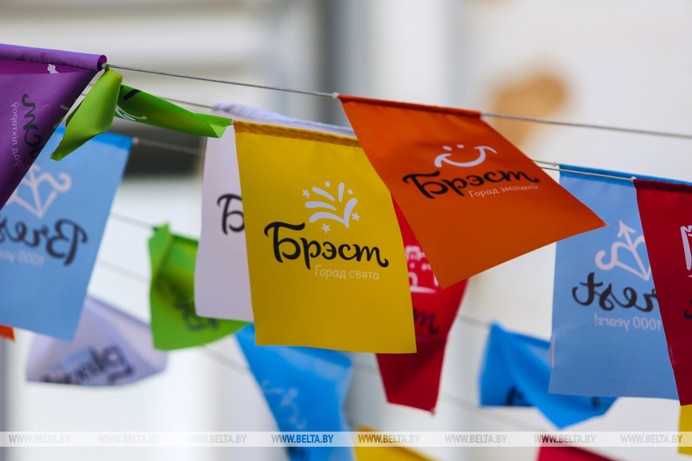
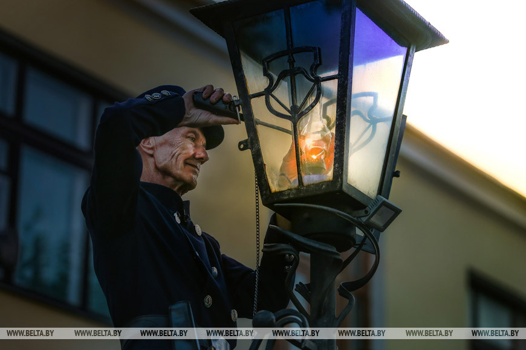
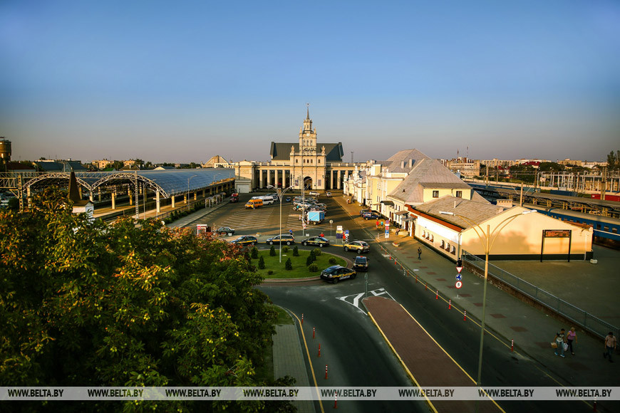

Брест празднует 1000-летний юбилей
 Брест в этом году отмечает свое тысячелетие. Город прошел трудный путь борьбы и побед, многократно разрушался, но каждый раз восставал из руин и вновь расцветал. Праздничные мероприятия в честь юбилея города пройдут 6-8 сентября. Логотипом тысячелетия уже брендирован общественный транспорт, праздничная символика нанесена на витрины магазинов и кафе. На главной пешеходной улице — Советской — появился большой баннер для записи поздравлений, где жители и гости города желают Бресту благополучия, процветания, мирного неба и добра, а также благодарят за уют и тепло. На улице Я.Купалы заработал новый фонтан — такой подарок городу сделал Брестский чулочный комбинат. Также открылось новое здание автовокзала, а журналисты и блогеры высадили березовую аллею в парке 1000-летия Бреста. В честь юбилея белорусские альпинисты подняли флаг Бреста на вершину Сибирь в горах Восточный Саян. Основные праздничные мероприятия состоятся 6-8 сентября более чем на десяти тематических площадках, по всему городу развернутся праздничные ярмарки-продажи.6 сентября в рамках программы «юбилейный» пройдут первый международный детский фестиваль театров и книг, праздник фольклорного искусства «Таночак», смотр-конкурс ведущих игровых программ «Берасцейскія забаўлянкі», будет представлен музыкальный проект «Город Света». Завершится первый праздничный день международным парадом оркестров стран СНГ «Марш 1000-летия».
 Следующий день, 7 сентября, пройдет под лозунгом «Брест праздничный». В храмах Бреста прозвучат молитвы о городе и его жителях, а в полдень христианские храмы устроят колокольный перезвон. В этот день гости праздника увидят выставки ремесленников, народных мастеров, дефиле-показ этнокостюмов «Модны стыль — народны тэкстыль». На музыкальных площадках выступят творческие коллективы и исполнители из Беларуси, Индии, Франции. На площадке у фонтана будут экспонироваться фотовыставки, а в выставочном зале откроется экспозиция белорусских художников «АРТ-Брест-1000». Брестский хоккейный клуб станет ареной спортивных состязаний, показательных выступлений спортсменов, конно-спортивной школы и игровых конкурсов. Знаковым мероприятием дня обещает стать карнавал. Красочные композиции на передвижных платформах готовят многие субъекты хозяйствования. В театрализованной форме будет отражена тысячелетняя история Бреста. В карнавале примут участие лучшие творческие коллективы города, в национальных костюмах пройдут студенты стран СНГ, участвующие в фестивале Дружбы. Мероприятию добавят колорит музыкальные коллективы из Беларуси, Казахстана, России, Латвии и Польши. В Брест они съедутся на фестиваль оркестров.
 В воскресенье, 8 сентября, организаторы праздника «Брест фестивальный» предлагают насладиться фестивалями уличных театров, воздушных змеев, красок и семейным праздником «Любовь есть». Также в этот день состоится второй легкоатлетический пробег «БрестПолуМарафон». Планируется, что в праздновании тысячелетия Бреста примут участие более 40 делегаций. С юбилеем города жителей поздравят представители всех областных центров Беларуси, а также побратимы из-за рубежа. Ожидается приезд партнеров из Украины, России, Израиля, Польши, Нидерландов, Болгарии, Германии, Сербии, Гвинеи-Бисау, Словакии, Венгрии, Латвии.